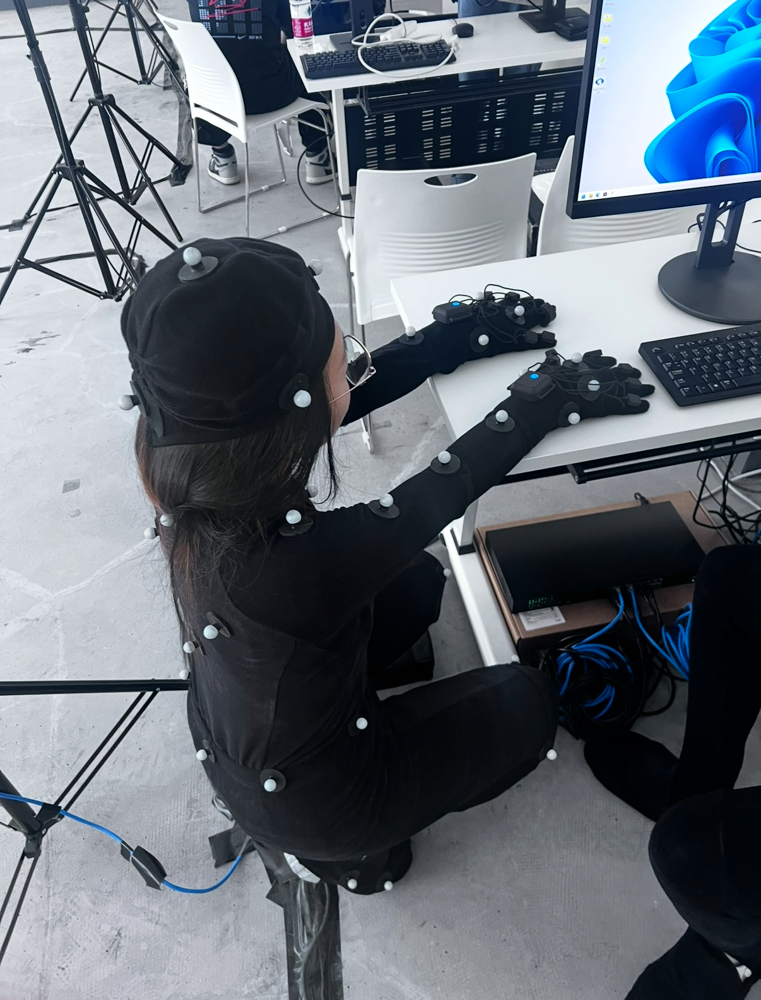
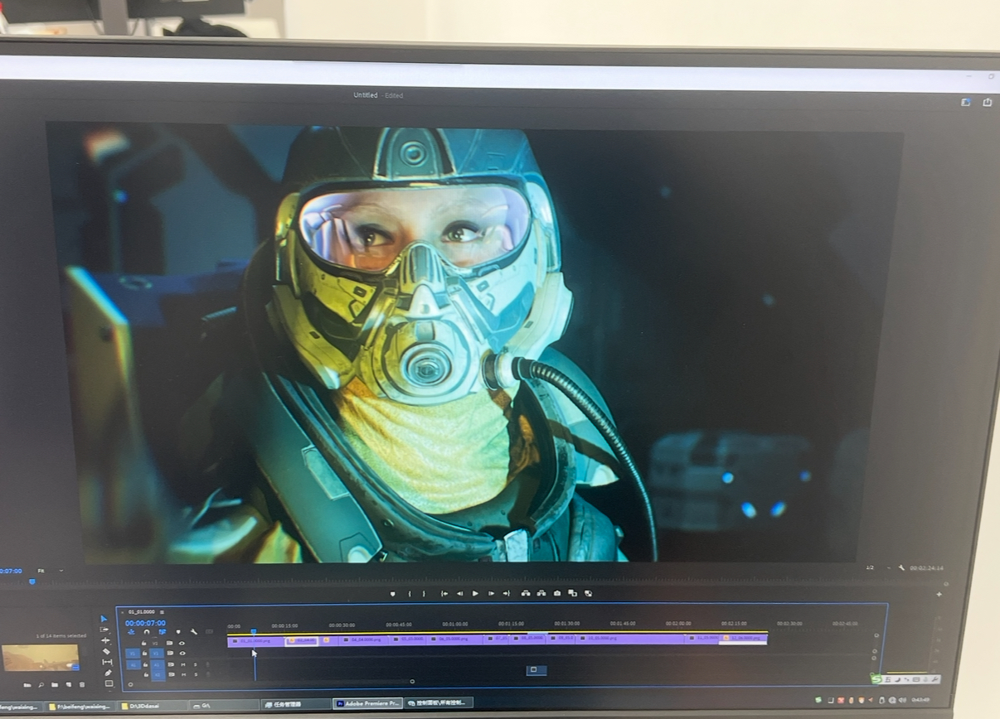
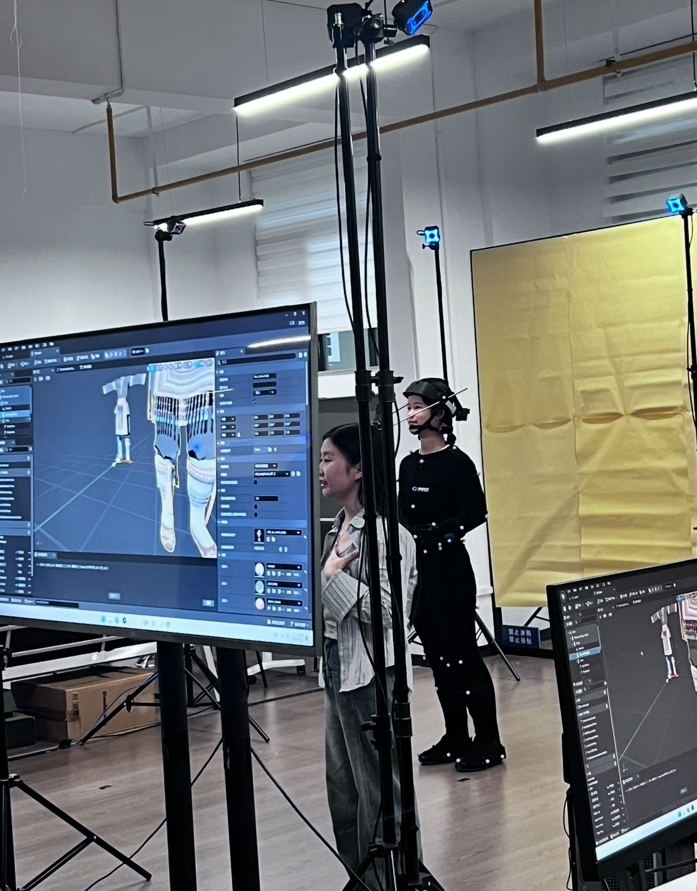
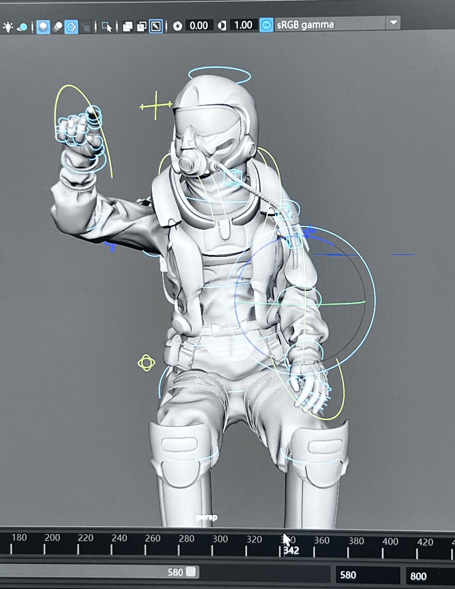
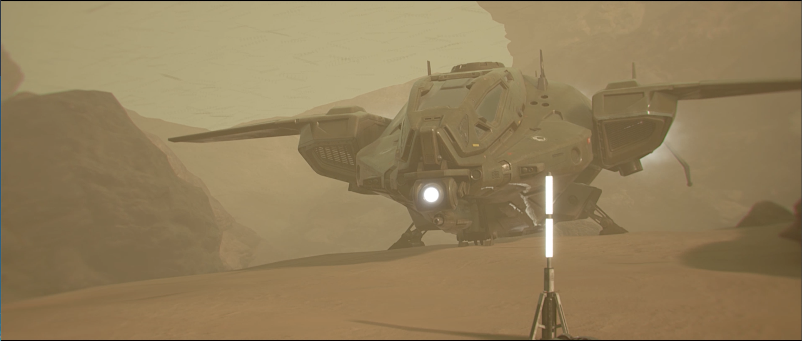
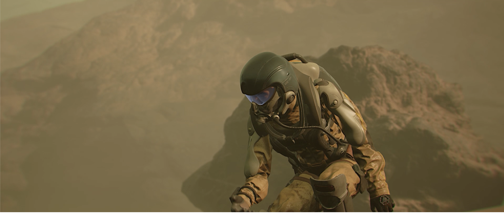

Contents
Echo
the call of civilization
A derivative short film expanding the Deep Space universe — conceived and produced within 48 hours.
MoCap
01 — Film
02 — Overview
What Is Echo?
- A standalone short film derived from the Deep Space project, exploring an alternate narrative thread within the same sci-fi universe.
- Produced under a 48-hour constraint as a rapid creative exercise — from script to final render.
- Themes of memory, identity, and resonance — the "echo" of choices made in Deep Space.
- Sole contributor: responsible for direction, editing, compositing, sound design, and color grading.
- Built entirely in Unreal Engine 5, reusing and extending assets from the parent project.
03 — Process

Behind the Scenes

Behind the Scenes

Behind the Scenes

Behind the Scenes

Behind the Scenes

Behind the Scenes
Behind the Scenes
04 — Stills
Selected Frames





05 — Awards
Honors & Recognition
- Longding Award at the National 3D Competition
06 — Credits
My Contribution
Direction
Editing
3D Modeling
Scene Composition
Lighting
Rendering
Compositing
Color Grading